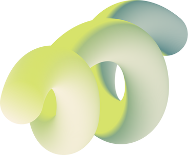
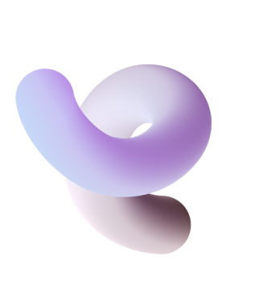

<div class="presentation">
    
    
    <div class="presentation__bubble ">

        <div>
            <p class="presentation__text">Bonjour ! Je m’appelle Mélina et je suis développeuse web en front-end,
                back-end
                et tests
                unitaires ! </p>
            <p class="presentation__text">Passionnée
                par
                l’informatique depuis maintenant plus de 5 ans, j’ai décidé de réaliser mes études d’Informatique à La
                Rochelle
                durant 3
                ans, ce qui m’a permit d’acquérir de multiples connaissances en développement web et en tests unitaires.
            </p>
            <p class="presentation__text">Je
                sais
                maintenant utiliser différents languages tel que le PHP, le Typescript et ses frameworks.
                Durant mon
                année
                d’alternance,
                j’ai acquis des compétences dans NestJS, Postgres, et Jest. Je souhaite bien sûr parfaire mes
                compétences
                dans
                le
                développement et je suis toujours très curieuse de découvrir de nouvelles technologies afin d’augmenter
                mon
                panel et de
                pouvoir fournir des sites et applications de plus en plus optimisés et originaux !
            </p>

        </div>
    </div>
</div>